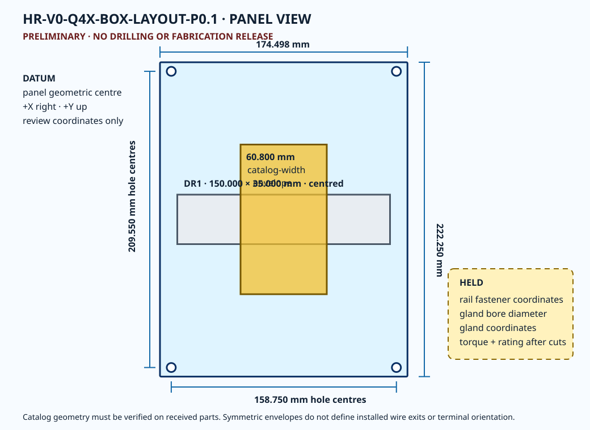
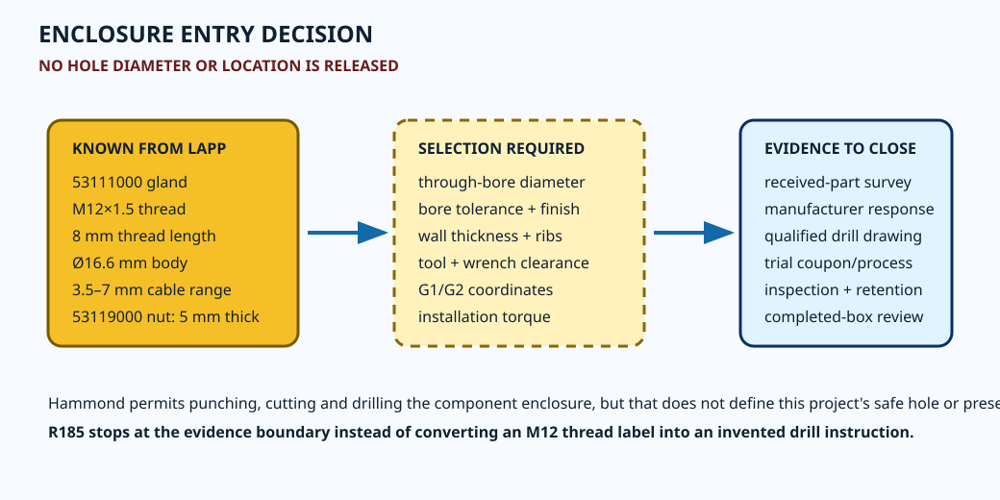

QLH-001
received panel
verify identity, 174.498 x 222.250 x 3.175 mm catalog envelope, four-hole pattern, flatness and enclosure fit
Manufacturer drawings and STEP geometry correct the panel size, lock the catalog hole pattern, and prove a centered rail/device envelope fits arithmetically. Received-part and qualified-review evidence still control every new hole.
PRELIMINARY - DIMENSIONAL REVIEW CANDIDATE ONLY - NOT APPROVED FOR PROCUREMENT, FABRICATION, DRILLING, CONNECTION, POWERED TESTING, MOTION, OR ENERGIZATION


| ID | Feature | Value | Basis | State |
|---|---|---|---|---|
| QLD-001 | PANEL1 overall X | 174.498 mm | 14F0907 drawing 6.87 in and official STEP | CATALOG BOUND / NOT RELEASED |
| QLD-002 | PANEL1 overall Y | 222.250 mm | 14F0907 drawing 8.75 in and official STEP | CATALOG BOUND / NOT RELEASED |
| QLD-003 | PANEL1 thickness | 3.175 mm | 14F0907 drawing 0.13 nominal; official STEP 3.175 | CATALOG BOUND / NOT RELEASED |
| QLD-004 | PANEL1 hole diameter | 6.350 mm | 14F0907 drawing 0.25 in TYP (4) | CATALOG BOUND / NOT RELEASED |
| QLD-005 | PANEL1 hole-center X span | 158.750 mm | 14F0907 drawing 6.25 in | CATALOG BOUND / NOT RELEASED |
| QLD-006 | PANEL1 hole-center Y span | 209.550 mm | 14F0907 drawing 8.25 in | CATALOG BOUND / NOT RELEASED |
| QLD-007 | DR1 rail cut length | 150.000 mm | project candidate; above Phoenix 100 mm perforated-rail minimum | DIMENSION CANDIDATE / CUT NOT RELEASED |
| QLD-008 | DR1 profile width | 35.000 mm | Phoenix 1207650 current product data | CATALOG BOUND / NOT RELEASED |
| QLD-009 | device-group catalog width sum | 60.800 mm | 2x9.5 + 6.2 + 6x5.2 + 2x2.2 | ARITHMETIC SCREEN / INSTALLED FIT OPEN |
| QLD-010 | rail-end to panel-edge nominal clearance | 12.249 mm | (174.498 - 150.000) / 2 | NOMINAL SCREEN / TOLERANCE OPEN |
| QLD-011 | device-group to panel-edge nominal clearance | 56.849 mm | (174.498 - 60.800) / 2 | NOMINAL SCREEN / ORIENTATION OPEN |
| QLD-012 | max-device envelope to panel Y edge | 58.225 mm | 222.250 / 2 - 105.800 / 2 | SYMMETRIC PLANNING SCREEN ONLY |
| QLD-013 | G1/G2 gland connection thread | M12x1.5 thread | LAPP DB53111000EN version 17 | CATALOG BOUND / BORE NOT RELEASED |
| QLD-014 | G1/G2 gland thread length | 8.000 mm | LAPP DB53111000EN version 17 | CATALOG BOUND / WALL STACK OPEN |
| QLD-015 | G1/G2 gland body diameter | 16.600 mm | LAPP DB53111000EN version 17 | CATALOG BOUND / SPACING OPEN |
| QLD-016 | G1/G2 locknut thickness | 5.000 mm | LAPP DB53119000EN version 09 | CATALOG BOUND / STACK OPEN |
| QLD-017 | G1/G2 enclosure bore | SELECTION REQUIRED mm | not published as an application bore by the checked LAPP records | NO DRILLING VALUE RELEASED |
QLH-001
verify identity, 174.498 x 222.250 x 3.175 mm catalog envelope, four-hole pattern, flatness and enclosure fit
QLH-002
map usable bottom-wall flats, ribs, bosses, hinge/latch/feet zones, local wall thickness and closed-lid clearance
QLH-003
receive 1207650, record first/last slot centers and catalog-tolerance realization, select cut datum, cut/deburr/protect edges and inspect 150.0 mm result
QLH-004
select exact screw, nut, washers and retention method compatible with 6.2 mm slots and 3.175 mm fiberglass panel; set torque from qualified application review
QLH-005
confirm PTCB/terminal orientation, end-cover side/count, CLIPFIX retention, marker access and installed 60.8 mm width
QLH-006
obtain manufacturer/application bore allowance or qualify the received gland/hole stack; freeze diameter, tolerance, edge finish and tool
QLH-007
freeze G1/G2 axes only after received-wall survey, tool access, cable separation, bend radius and no-interference review
QLH-008
obtain current LAPP application torque for the exact body/locknut/housing stack or a qualified alternate installation process
QLH-009
review loss of catalog enclosure rating after modification; define labels, strain relief, ingress, thermal and service-access acceptance
QLH-010
qualified Boston review of isolated metal rail in nonmetal enclosure; verify no unintended PE, 0 V, drain, chassis or robot-domain connection
QLH-011
issue separate signed authorization for receiving/metrology before any later cutting or drilling scope
QLH-012
qualified mechanical/electrical reviewers accept the final drilling drawing, hardware stack and inspection plan
| ID | Maker | Document | Revision/date | Controlled use |
|---|---|---|---|---|
| QLS-001 | Hammond Manufacturing | PJ1084T official product page | live page; checked 2026-08-10 | exact enclosure identity and current download routes |
| QLS-002 | Hammond Manufacturing | PJ1084T dimensional drawing | issue 2014-06-04; checked 2026-08-10 | overall, inner-panel, usable-depth and mounting dimensions |
| QLS-003 | Hammond Manufacturing | PJ1084T STEP | download stamp 1697662030; checked 2026-08-10 | catalog geometry inspection only; no manufacturing tolerance inferred |
| QLS-004 | Hammond Manufacturing | 14F0907 official product page | live page; checked 2026-08-10 | exact fiberglass-panel identity |
| QLS-005 | Hammond Manufacturing | 14F0907 dimensional drawing | issue 2020-01-29; checked 2026-08-10 | panel size, thickness and four-hole pattern |
| QLS-006 | Hammond Manufacturing | 14F0907 STEP | download stamp 1697661987; checked 2026-08-10 | 174.498 x 222.250 x 3.175 mm catalog solid |
| QLS-007 | Phoenix Contact | NS 35/7,5 PERF 500MM item 1207650 | live page; checked 2026-08-10 | 35 x 7.5 mm rail, 15 x 6.2 mm holes at 25 mm pitch, catalog tolerances |
| QLS-008 | Phoenix Contact | PTCB E1 24DC/0.1A NO item 1464484 | live page; checked 2026-08-10 | 6.2 x 105.8 x 55.6 mm catalog envelope |
| QLS-009 | Phoenix Contact | PT 2,5 item 3209510 product data | generated 2026-07-12; checked 2026-08-10 | 5.2 mm width; 48.6 mm height; 36.8 mm depth on NS 35/7.5 |
| QLS-010 | Phoenix Contact | PT 2,5-QUATTRO item 3209578 product data | generated 2026-06-27; checked 2026-08-10 | 5.2 mm width; 72.2 mm height; 36.8 mm depth on NS 35/7.5 |
| QLS-011 | Phoenix Contact | CLIPFIX 35 item 3022218 product data | generated 2026-07-02; checked 2026-08-10 | 9.5 mm installed width and 54.6 x 33.5 mm catalog envelope |
| QLS-012 | Phoenix Contact | D-ST 2,5 / D-ST 2,5-QUATTRO | live/generated pages; checked 2026-08-10 | 2.2 mm width for each exact cover candidate |
| QLS-013 | LAPP | SKINTOP ST-M item 53111000 data sheet | DB53111000EN version 17; valid 2023-06-20; checked 2026-08-10 | M12x1.5, 15 mm wrench, 16.6 mm body diameter, 8 mm thread, 3.5-7 mm cable range |
| QLS-014 | LAPP | SKINTOP GMP-GL-M item 53119000 data sheet | DB53119000EN version 09; valid 2019-02-19; checked 2026-08-10 | M12x1.5 locknut, 17 mm wrench, 18.7 mm corner envelope and 5 mm thickness |
Sol's 18 BLOCKER / 30 MAJOR / 8 MINOR verdict remains the independent baseline. This project-owned pass supplies one missing physical-definition layer but closes no blocker, no functional-safety allocation, no physical verification and no energization gate.